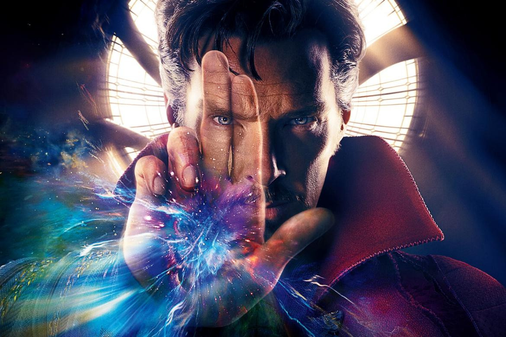

Walter White (Breaking Bad)
Professor com câncer, Walter fabrica metanfetamina para sustentar a família, virando o temido Heisenberg e mergulhando no mundo do crime.
Tony Montana (Scarface - 1983)
Imigrante cubano, Tony sobe no tráfico em Miami com ambição e violência, conquistando poder e caindo em paranoia até sua queda brutal.
Dean Winchester (Supernatural)
Caçador de monstros, Dean viaja com o irmão Sam enfrentando demônios, anjos e apocalipses, sempre guiado por lealdade e sacrifício familiar.
Jon Snow (Game of Thrones)
Criado como bastardo, Jon se junta à Patrulha da Noite, descobre sua origem real e luta para salvar Westeros dos mortos-vivos e do caos.
Doutor Estranho (Marvel)
Após perder a carreira como cirurgião, Strange aprende magia e se torna o guardião da Terra contra ameaças místicas e dimensões perigosas.
Anakin Skywalker (Star Wars)
Jedi promissor corrompido pelo medo, Anakin vira Darth Vader, mergulha no lado sombrio e encontra redenção ao salvar o filho no fim.
Homem Aranha (Marvel)

Picado por uma aranha, Peter ganha poderes e vira o Homem-Aranha, lutando contra vilões enquanto tenta equilibrar vida pessoal e heroísmo.
Isagi Yoichi (Blue Lock)

Atacante promissor, Isagi entra no projeto Blue Lock para se tornar o melhor do mundo, enfrentando rivais e descobrindo seu estilo único.
Afro Samurai
Afro busca vingança pela morte do pai, enfrentando inimigos brutais em um mundo de samurais futuristas, guiado pela honra e pela sede de justiça.